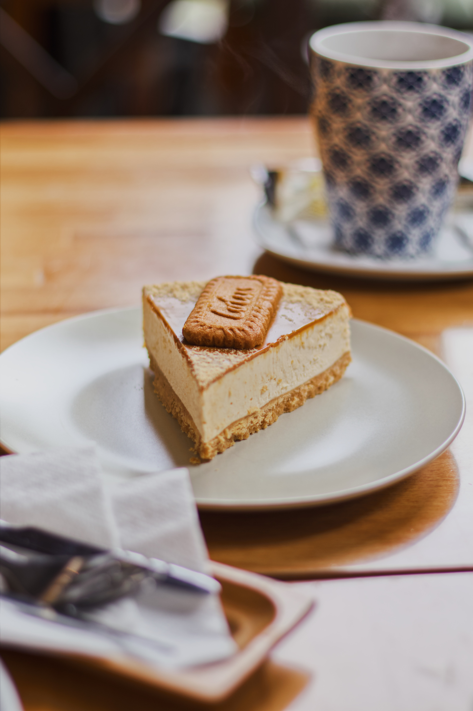

Local green tea
First of all, our coffee is proud to present its best product, the tea. 100% homegrown leaves, locally sourced.
(We buy it in the ABC-store nearby)

Local cookies
Our selection of tea cakes, biscuits and cookies are made by our lovely (and very bored) grandmothers. The products change day by day, depending on what the grannies feel like baking that day.

Local coffee
Okay, okay, we don't grow our own coffe-beans (for now, we will see what global warming might do in the future). But we do grind them locally, with local workforce and locally-made grinder machine!
Local food
Local pig, local egg, local wheat, local butter, local cucumber, local spinach, local water (drink carefully)

Agaricus bisporus
We won't judge you for ordering three pieces of (local!) mushrooms